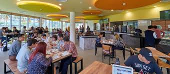

Course we offer
Our courses are designed to help you understand concepts through an easy and hands-on approach. Moreover, with corresponding updates in the same industry listed alongside the course material our engineering courses ensure that you are in touch with the real world. Thus adding a layer of relevance.
Intermediate
We are looking for a motivated and enthusiastic Intermediate Engineer, who is looking to be part of a meaningful change in an industry overdue for transformation.
Degree
An engineer's degree is an advanced academic degree in engineering which is conferred in Europe, some countries of Latin America, North Africa and a few institutions in the United States. The degree may require a thesis but always requires a non-abstract project.
Post graduation
A post graduate diploma in engineering is a popular course among several engineering students who have done their graduate in the said field. A post graduate diploma is extremely helpful to those who plan to enhance their skills after completing their graduation.
Our Global Campus
The Global Campus GC Junior A special place for under 8s! Featuring Forest School, Global Goals Explorers, Curiosity Corner, and Story Sacks, this area offers younger students a range of unique and exciting activities that encourage exploration, creativity, and expression.
Our Facilities
Facility Management’s mission is to efficiently operate, maintain, and improve campus facilities in support of University programs by providing a safe, clean, attractive, and friendly environment for students, faculty, staff, and visitors.

World Class Library
We invite you to explore the services and resources offered at the Library. Here you shall find useful information published in books and journals print and online. We are subscribed to databases so you have access to information that is relevant to your field of study.
Largest Play Ground
Cultural, educational and sport venues play a crucial role in the training of tomorrow’s generations. We have a great responsibility: we design for the future of young people, for their human and professional achievement.

Tasty and Healthy Food
Polytechnic University’s cafeteria, one of the most popular spots on campus, provides a diverse menu of breakfast and lunch at reasonable prices. With excellent customer service, plus a great place to meet and chat with friends.
What our students say
Nice building to walk past and take pictures. It is located in a nice square so worth doing if you are nearby Mother Teresa Square.
It is a interesting place to visit especially the Mother Theresa Square where one can see an interesting mixture of Italian Fascist and Communist architecture superimposed on each other. It reflects over 70 years of a very complex history.
Alfred Frasheri
This is a good place to walk around or sit on the stairs (where most people sit), either during the day or at night when all the blue lights are turned on and there are many people sitting and chatting.
Elena Bebi
Enroll For Our Various Online Courses Anywhere From The World
CONTACT US